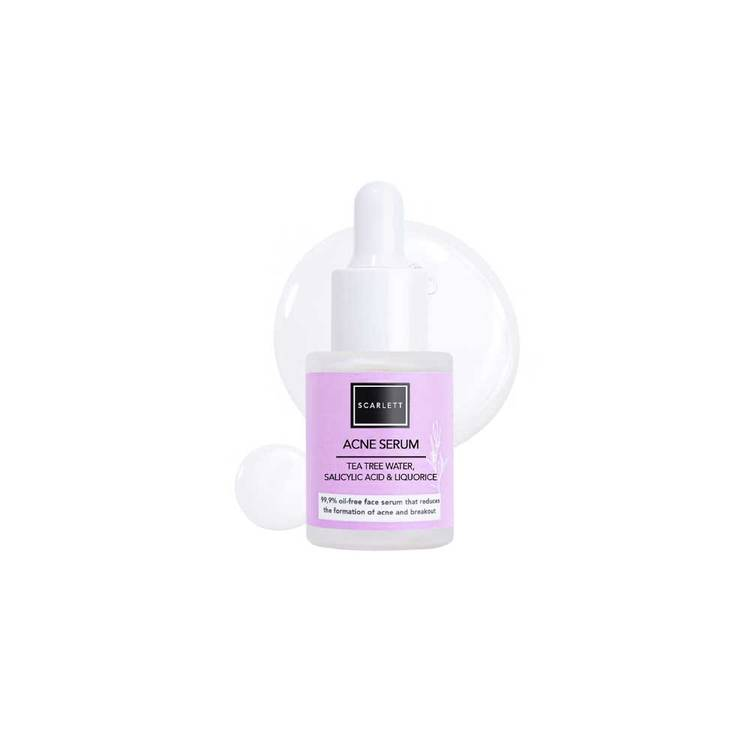

Scarlett Acne Serum 15 ml
Serum wajah merupakan salah satu produk perawatan kulit yang penting agar wajah kita
bersinar. Apalagi saat kita sedang tidak percaya diri karena
wajah kusam dan berjerawat, produk ini juga bisa membantu kita.
Kulit kusam dan berjerawat bisa mengurangi rasa percaya diri.
Anda secara signifikan. Apalagi kalau komedo mulai muncul di wajah, itu belum tentu benar!
Apakah Anda memiliki wajah yang rentan berjerawat? Tidak ada salahnya mencoba serum
ini. Nah, Scarlett Acne Serum bisa menjadi pilihan bagi remaja yang sedang mengalami masalah jerawat.
Pasalnya produk ini mengandung bahan pelawan jerawat seperti tea tree, asam salisilat, dan vitamin C.
Semua bahan tersebut memiliki kemampuan untuk mengurangi peradangan, iritasi, dan kemerahan akibat jerawat.
Serum untuk remaja ini juga mengandung centella asiatica untuk membantu regenerasi kulit.
Anda bisa menggunakannya di pagi dan sore hari. Cukup tambahkan 2 hingga 3 tetes serum dan oleskan secara merata pada wajah Anda.
Gosok dan pijat secara lembut agar nutrisinya meresap dengan baik hingga ke lapisan kulit. Kisaran harga:
Rp 63.500 – Rp 88.500
Berikut kegunaan Scarlett Acne Whitening Serum yang bisa anda rasakan:
- Membantu menyembuhkan jerawat meradang, jerawat kistik, kemerahan dan iritasi.
- Membantu meregenerasi dan menjaga kulit sensitif tanpa menyebabkan iritasi.
- Membantu menenangkan kulit, menghaluskan kulit dan mengurangi bekas jerawat atau luka.
- Membantu mencerahkan kulit dengan aman menggunakan ekstrak licorice dan vitamin C yang
juga berperan sebagai antioksidan dan anti polusi.
- Membantu mengontrol sebum berlebihan pada kulit.
Kelebihan Scarlett Acne Whitening:
- Teksturnya cukup kental sehingga tidak perlu banyak tetes untuk menutupi seluruh wajah.
- Dapat membantu menghilangkan jerawat, namun tidak serta merta.
- Kemasannya kokoh meskipun terbuat dari kaca.
- Berbahan dasar air sehingga cocok untuk kulit berminyak.
- Ini menyerap ke dalam kulit dengan cukup cepat.
- Cukup mudah ditemukan di toko online maupun offline.
Kekurangan Scarlett Acne Whitening:
- Serum sensitif terhadap cuaca buruk. Kalau panas teksturnya jadi cair.
- Tapi kalau sudah tidak panas lagi akan mengental.
- Harganya cukup mahal.
- Pipetnya tidak mencapai bagian bawah botol,
sehingga jika serum hampir habis maka akan sulit digunakan.
Read More